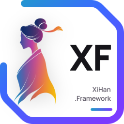

XiHanFun · 生态后端基座 Backend Foundation
XiHan
.
Framework
快速、轻量、高效、用心的 .NET 现代模块化开发框架
.NET 10
Modular
Dynamic API
DDD
.NET Native First

XiHanFun · 生态组件层 Component Layer
XiHan
.
UI
框架无关的跨端组件库 · 无头内核，Vue 3 与 Web Components 双适配器
Headless
Vue 3 · Web Components
State Machine
Design Tokens
AI Components
XiHanFun · 生态基础应用 Basic Application
XiHan
.
BasicApp
基于 .NET + TS 的超高颜值中后台内核 · 开箱即用，面向新型企业级管理场景
.NET 10
TypeScript
RBAC · ABAC
Multi-Tenant
AI